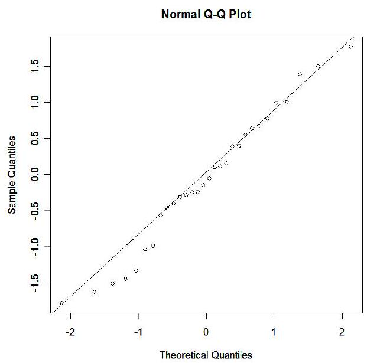
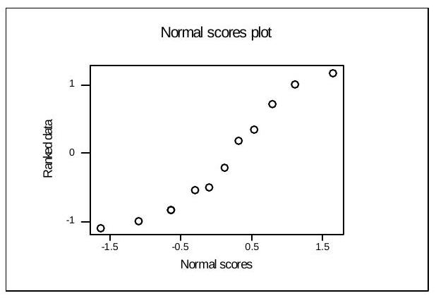
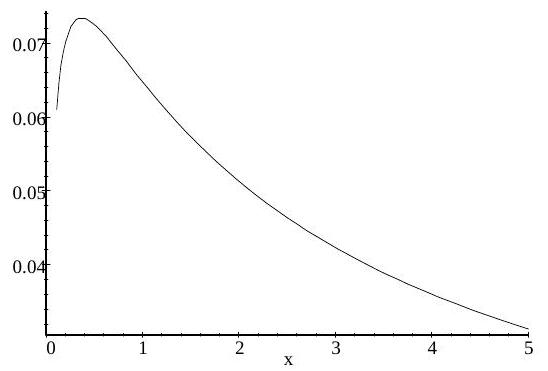

17. Graphical tests of goodness-of-fit: Probability plots#
We describe here an informal, graphical method for deciding whether a data set is from some specified distribution. Such procedures do not follow the pattern of hypothesis tests, but nevertheless can give useful guidelines for whether a model is appropriate for a data set. Arguably the following method is more insightful than tests which lead to formal acceptance/rejection criteria.
17.1. Normal scores#
We consider the case which requires special attention since tables exist (and are readily available in statistical software packages such as \(\mathrm{R}\) ), and is the most widely used application of so-called probability plots. The tables and software provide Normal scores, which we define below.
Consider an independent and identically distributed (i.i.d. for short) sample ranked in order, \(x_{(1)} \leq \ldots \leq x_{(n)}\). We wish to decide whether the observations arise from some r.v. \(X \sim N(\mu, \sigma)\). If this model is appropriate for the data, we know that
So if \(y_{(1)} \leq y_{(2)} \leq \ldots \leq y_{(n)}\) were an ordered sample from \(N(0,1)\), we would expect a plot of \(x_{(i)}\) against \(y_{(i)}\) to be a straight line, with slope \(\sigma\) and intercept \(\mu\), since approximately \(x_{(i)}=\sigma y_{(i)}+\mu\). This provides the basis of the graphical test.
Definition: The Normal scores for a given integer \(n\) are the expected values of an ordered sample of size \(n\) taken at random from the standard Normal distribution.
Tables of these expected values exist for various values of \(n\), and they are readily available from \(R\) in at least two ways. If the data are stored in vector \(\mathrm{y}\), then the command csores in the exactRankTests package can be used to generate the associated Normal scores and create a plot, as follows:
nsy <- cscores(y, type='Normal', int=FALSE)
plot(nsy, y)
The command qqnorm is an alternative to the above, and produces a Normal scores plot directly. Another command qqline adds a line that passes through the first and third quartiles. Below is such a plot for a sample of thirty observations generated from the standard Normal:

Example 1 Are the following data consistent with being from the standard Normal distribution?
The Normal scores plot is as below:

The plot is not far from a straight line with unit slope, though there is some noticeable deviation from a linear pattern at the extremes. A picture like the above might suggest the data arise from a distribution with somewhat “thinner tails” than the Normal.
Normal scores provide a graphical test for the goodness-of–fit of another distribution, the Lognormal distribution. This continuous distribution has density function
for \(x>0\), and depends on two parameters, \(\mu\) and \(\sigma>0\). The density is unimodal but not symmetrical, and is used, for example, in modelling the distribution of household incomes.

The p.d.f. of the \(L(3,4)\) distribution
If \(X\) has the above p.d.f., we write \(X \sim L N(\mu, \sigma)\). As the name suggests, there is a strong link between the Lognormal and Normal distributions: if \(X \sim L N(\mu, \sigma)\) then \(\log (X) \sim N(\mu, \sigma)\). Hence a simple test for Lognormality is to plot the logs of the data against the Normal scores, and treat the resulting plot like a Normal probability plot.